Created by <Academia de Código_>
Ant needs to be told exactly what to do and when to do it, everything has to be explicitly configured
Maven dependency management system is the reason
most people move away from Ant.
Maven uses convention over configuration
and has lots of implicit functionalities
A Maven project is simply a directory containing a pom.xml file
It is an XML file that contains information about the project and configuration details used to build it
All POMs extend from a default Super POM and describe the project:
An artifact is a file that is produced by the build process and represents an application binary. A Maven artifact can be:
Ordered list of phases which are executed sequentially
// Execute all phases up to and including package
$ mvn package
Define a set of identifiers which can be used to uniquely identify a project

Maven defines a standard directory structure, allowing users familiar with one Maven project to immediately understand another one
In Maven, artifacts and plugins are loaded from remote repositories when needed. Downloaded software is then saved in a local repository for use by all maven projects
We specify in the POM file what external libraries the project depends on, and which version, that Maven will download them into the local repository
If any of these external libraries need other libraries, then these other libraries are also downloaded into the local Maven repository
<groupId>com.googlecode.lanterna</groupId>
<artifactId>lanterna</artifactId>
2.1.9
compile
Not all dependencies are needed in all situations. Do we really need to package our test code? Dependency scope allows the inclusion of appropriate dependencies for the current stage of the build process
Aggregates the project binaries along with its dependencies, modules, site documentation and other files into a single distributable archive
<artifactId>maven-assembly-plugin</artifactId>
<groupId>org.apache.maven.plugins</groupId>
2.6
<mainClass>org.academiadecodigo.LantHelloWorld</mainClass>
<descriptorRefs>
<descriptorRef>jar-with-dependencies</descriptorRef>
</descriptorRefs>
package
single